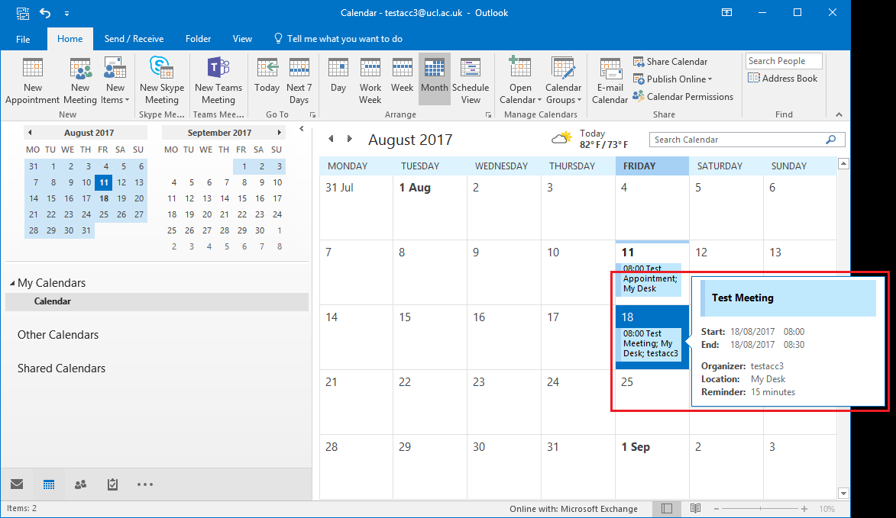
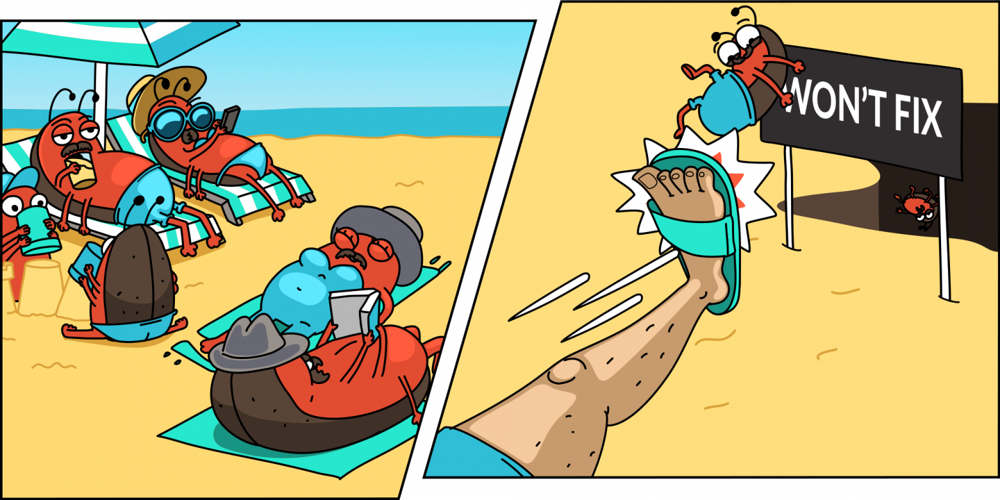

Retail AI Platform Kickoff
Денис Аникин, https://xfenix.ruКто я

- Техлид в AI Platform
- В прошлом техлид Chat, AI Assistants, RCRM, Knowledge Base
- SCL Python Community
- Знаю python, typescript, kubernetes, фронтенд, занимаюсь архитектурой
- Выступаю на конференциях, вхожу в ПК почти всех Python конференций
Церемонии или Мероприятия
Типы наших регулярных встреч
- Планирование в среду
- Дейли каждый день
- Ретроспектива во вторник
Длина спринтов: 2 недели
Встречи появятся в ваших календарях

Планирование
Общие принципы планирования
- В понедельник–вторник анонсируем новый спринт в канале ~ai-platform
- Вы можете разобрать задачи из будущего спринта в Jira
- До конца вторника необходимо закрыть ваши задачи или предупредить, что закрыть их не получится
Что делать с незакрытыми задачами?
- Выделять из них недоделанную часть в виде отдельной задачи
- Оценивать эту часть и закидывать в беклог или на следующий спринт
- Уведомлять об этом команду
Что делать с неначатыми задачами?
- Если она не влезает в спринт — не начинать
- Если влезает — можно брать в работу
Что происходит на планировании?
- В идеале — закрываем старый спринт, смотрим достигли ли мы цели, запускаем новый
- Дораздаём задачи, которые неразобрали
- Учитываем отпуск (предупреждайте о нём, пожалуйста!)
- Ставим цель спринта
Зачем нужно планирование?
Зачем нужно планирование?
Чтобы иметь фокус на спринт
Ретроспектива
Как работает ретроспектива
- Есть доска
- На неё стоит записывать, что было хорошо, что было плохо
- Важно туда выносить то, что вас беспокоит, мешает вам работать
- Мы обсуждаем это, придумываем решения и создаём из них задачи
Зачем нужна ретроспектива?
Чтобы исправлять системные проблемы и улучшать всё, что можно
Дейли
Как проходят очные дейли?
- Постоянная ссылка в ktalk, понедельник, среда, пятница
- Надо ответить на 3 вопроса — что делали вчера, что будете делать сегодня и были ли проблемы
- Иногда можно отменять
- Если собираетесь пропустить — предупредите всех в канале
- Если пропустили — отпишите в канале статус
Встреча «очный дейли» занимает 20 минут
Как и когда проходят асинхронные дейли?
- Каждый вторник и четверг
- Пишите что делали, что будете делать и есть ли проблемы в ~ai-platform
Зачем?
Чтобы иметь возможность видеть прогресс и быстрее устранять проблемы
PBR
PBR — product backlog refinement
- С помощью PBR мы пополняем беклог задачами
- В процессе PBR мы разбираем сложные задачи, проектируем, декомпозируем, оцениваем
- В канале ~ai-platform-pbr создаётся тред, в нём и работаем
- При необходимости собираем встречу на троих
А ещё нужно иногда проводить чистки беклога от старых задач
Зачем нужен PBR?
Помогает систематически
наполнять беклог
Сторипоинты
Как оценивать в SP?
- Ставьте оценки в 1, 2, 3, 5, 8, 13, 21 SP
- В начале оценивайте «на глазок», начиная с 1
- В будущем оценивайте относительно предыдущих задач, задавая вопрос «сложнее или проще такой-то задачи»
- Никогда не конвертируйте в часы
Сторипоинты —
это не часы с другим названием
Зачем нужы сторипоинты?
«Принуждают» вас оценивать задачи не по времени, а относительно предыдущих
Это исправляет ошибку планирования
Zero bug policy
Zero bug policy
- Заносим баги в беклог
- Критические исправляем сразу
- Менее горящие — в ближайшие 1-2 спринта
- Остальные удаляем и считаем частью продукта

Зачем zero bug policy?
Помогает не забивать беклог неисправляемыми,
вечными «багами»
Разработка
Практики в разработке
- (почти) Trunk based development
- Обычный code review
- Стремимся к нормальному CI
Стек
Что будет в нашем стеке?
- Python (неожиданный пункт)
- TypeScript
- k8s, PostgreSQL, Gitlab, Visual studio code
- Разные open-source решения
- Возможно, немного Java и Kotlin